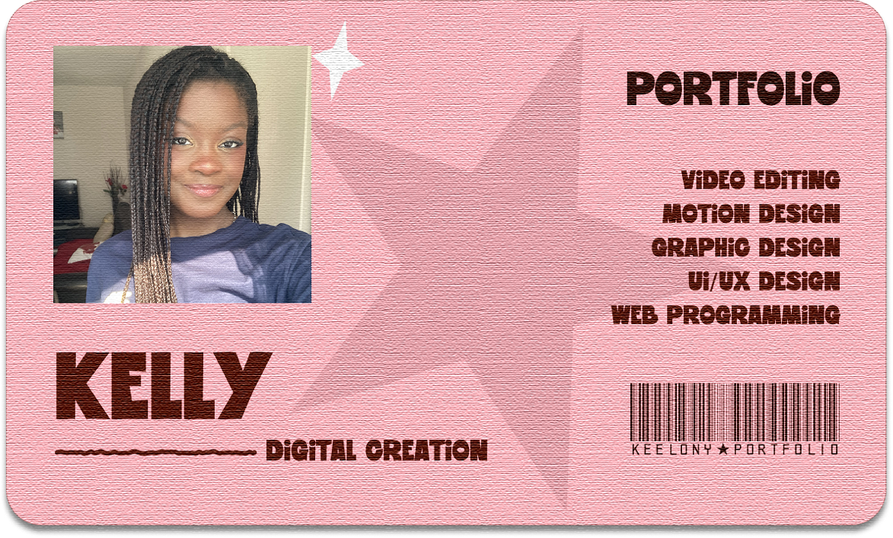
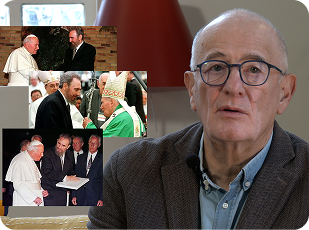
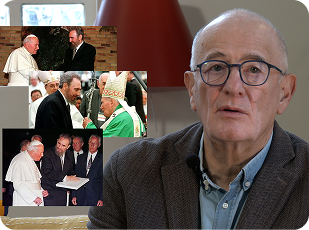

BONJOUR !
Je m'appelle Kelly Makaya Moussoki et je suis actuellement en deuxième année de BUT Métiers du
Multimédia et de l’Internet (MMI).
Passionnée par l’UX/UI design et le montage vidéo, je m’attache à développer continuellement mes
compétences afin de réaliser des projets créatifs, cohérents et de grande qualité.
Curieuse et motivée, j’aime explorer de nouvelles idées innovantes et relever des défis qui stimulent
ma créativité.
MES LOGICIELS MAÎTRISÉS
Création numérique


Développement web


 
